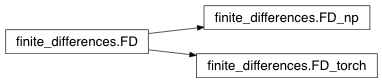

Finite differences¶
finite_difference.py is the main package to compute finite differences in 1D, 2D, and 3D on numpy arrays (class FD_np) and pytorch tensors (class FD_torch). The package supports first and second order derivatives and Neumann and linear extrapolation boundary conditions (though the latter have not been tested extensively yet).
-
class
finite_differences.FD(spacing, bcNeumannZero=True)[source]¶ FD is the abstract class for finite differences. It includes most of the actual finite difference code, but requires the definition (in a derived class) of the methods get_dimension, create_zero_array, and get_size_of_array. In this way the numpy and pytorch versions can easily be derived.
-
dim= None¶ spatial dimension
-
bcNeumannZero= None¶ should Neumann boundary conditions be used? (otherwise linear extrapolation)
-
spacing= None¶ spacing
-
dXb(I)[source]¶ Backward difference in x direction: \(\frac{dI(i)}{dx}\approx\frac{I_i-I_{i-1}}{h_x}\)
Parameters: I – Input image Returns: Returns the first derivative in x direction using backward differences
-
dXf(I)[source]¶ Forward difference in x direction: \(\frac{dI(i)}{dx}\approx\frac{I_{i+1}-I_{i}}{h_x}\)
Parameters: I – Input image Returns: Returns the first derivative in x direction using forward differences
-
dXc(I)[source]¶ Central difference in x direction: \(\frac{dI(i)}{dx}\approx\frac{I_{i+1}-I_{i-1}}{2h_x}\)
Parameters: I – Input image Returns: Returns the first derivative in x direction using central differences
-
ddXc(I)[source]¶ Second deriative in x direction
Parameters: I – Input image Returns: Returns the second derivative in x direction
-
dYb(I)[source]¶ Same as dXb, but for the y direction
Parameters: I – Input image Returns: Returns the first derivative in y direction using backward differences
-
dYf(I)[source]¶ Same as dXf, but for the y direction
Parameters: I – Input image Returns: Returns the first derivative in y direction using forward differences
-
dYc(I)[source]¶ Same as dXc, but for the y direction
Parameters: I – Input image Returns: Returns the first derivative in y direction using central differences
-
ddYc(I)[source]¶ Same as ddXc, but for the y direction
Parameters: I – Input image Returns: Returns the second derivative in the y direction
-
dZb(I)[source]¶ Same as dXb, but for the z direction
Parameters: I – Input image Returns: Returns the first derivative in the z direction using backward differences
-
dZf(I)[source]¶ Same as dXf, but for the z direction
Parameters: I – Input image Returns: Returns the first derivative in the z direction using forward differences
-
dZc(I)[source]¶ Same as dXc, but for the z direction
Parameters: I – Input image Returns: Returns the first derivative in the z direction using central differences
-
ddZc(I)[source]¶ Same as ddXc, but for the z direction
Parameters: I – Input iamge Returns: Returns the second derivative in the z direction
-
lap(I)[source]¶ IMPORTANT: ALL THE FOLLOWING IMPLEMENTED CODE ADD 1 ON DIMENSION, WHICH REPRESENT BATCH DIMENSION. THIS IS FOR COMPUTATIONAL EFFICIENCY.
Parameters: I – Input image [batch, X,Y,Z] Returns: Returns the Laplacian
-
getdimension(I)[source]¶ Abstract method to return the dimension of an input image I
Parameters: I – Input image Returns: Returns the dimension of the image I
-
create_zero_array(sz)[source]¶ Abstract method to create a zero array of a given size, sz. E.g., sz=[10,2,5]
Parameters: sz – Size array Returns: Returns a zero array of the specified size
-
get_size_of_array(A)[source]¶ Abstract method to return the size of an array (as a vector)
Parameters: A – Input array Returns: Returns its size (e.g., [5,10] or [3,4,6]
-
xp(I)[source]¶ IMPORTANT: ALL THE FOLLOWING IMPLEMENTED CODE ADD 1 ON DIMENSION, WHICH REPRESENT BATCH DIMENSION. THIS IS FOR COMPUTATIONAL EFFICIENCY.
Returns the values for x-index incremented by one (to the right in 1D)
Parameters: I – Input image [batch, X, Y,Z] Returns: Image with values at an x-index one larger
-
xm(I)[source]¶ IMPORTANT: ALL THE FOLLOWING IMPLEMENTED CODE ADD 1 ON DIMENSION, WHICH REPRESENT BATCH DIMENSION. THIS IS FOR COMPUTATIONAL EFFICIENCY.
Returns the values for x-index decremented by one (to the left in 1D)
Parameters: I – Input image [batch, X, Y, Z] Returns: Image with values at an x-index one smaller
-
yp(I)[source]¶ IMPORTANT: ALL THE FOLLOWING IMPLEMENTED CODE ADD 1 ON DIMENSION, WHICH REPRESENT BATCH DIMENSION. THIS IS FOR COMPUTATIONAL EFFICIENCY.
Same as xp, but for the y direction
Parameters: I – Input image Returns: Image with values at y-index one larger
-
ym(I)[source]¶ Same as xm, but for the y direction
IMPORTANT: ALL THE FOLLOWING IMPLEMENTED CODE ADD 1 ON DIMENSION, WHICH REPRESENT BATCH DIMENSION. THIS IS FOR COMPUTATIONAL EFFICIENCY.
Returns the values for x-index decremented by one (to the left in 1D)
Parameters: I – Input image [batch, X, Y, Z] Returns: Image with values at y-index one smaller
-
zp(I)[source]¶ Same as xp, but for the z direction
IMPORTANT: ALL THE FOLLOWING IMPLEMENTED CODE ADD 1 ON DIMENSION, WHICH REPRESENT BATCH DIMENSION. THIS IS FOR COMPUTATIONAL EFFICIENCY.
Returns the values for x-index decremented by one (to the left in 1D)
Parameters: I – Input image [batch, X, Y, Z] Returns: Image with values at z-index one larger
-
zm(I)[source]¶ Same as xm, but for the z direction
IMPORTANT: ALL THE FOLLOWING IMPLEMENTED CODE ADD 1 ON DIMENSION, WHICH REPRESENT BATCH DIMENSION. THIS IS FOR COMPUTATIONAL EFFICIENCY.
Returns the values for x-index decremented by one (to the left in 1D)
Parameters: I – Input image [batch, X, Y, Z] Returns: Image with values at z-index one smaller
-
-
class
finite_differences.FD_np(spacing, bcNeumannZero=True)[source]¶ Defnitions of the abstract methods for numpy
-
getdimension(I)[source]¶ Returns the dimension of an image :param I: input image :return: dimension of the input image
-
-
class
finite_differences.FD_torch(spacing, bcNeumannZero=True)[source]¶ Defnitions of the abstract methods for torch
-
getdimension(I)[source]¶ Returns the dimension of an image :param I: input image :return: dimension of the input image
-